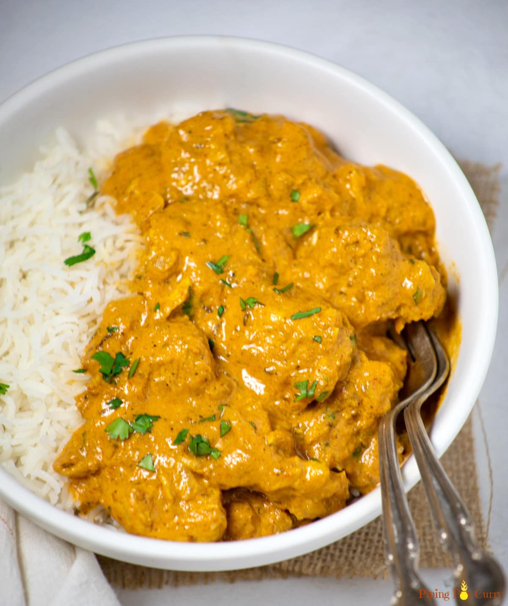

Yellow Curry Chicken

Description
No need for takeout from your local Thai restaurant when you can make an authentic-tasting curry this good in 25 minutes at home. The curry is hearty yet healthy comfort food that’s layered with Thai-inspired flavors and is naturally gluten-free.
Ingredients
- 2 tablespoons salted butter
- 2 tablespoons yellow curry paste
- 1 (14 ounce) can coconut milk
- 2 tablespoons olive oil
- 1 large yellow onion, sliced
- 5 cloves garlic, diced
- 1 pound skinless, boneless chicken breast, cut into 1-inch cubes
- 1 tablespoon chicken soup base (such as Better than Bouillon®)
- ½ cup lightly salted cashews
- 1⅓ cups water
- 1 cup uncooked jasmine rice, rinsed and drained
Steps
- Gently melt butter in a large skillet over low heat. Add curry paste; cook and stir for 2 to 3 minutes. Stir in coconut milk and bring to a simmer.
- Heat olive oil in a separate skillet over medium heat; stir in onion and garlic. Saute until onion has softened and turned translucent, about 5 minutes. Add chicken and chicken base and cook for 4 to 5 minutes.
- Transfer chicken mixture into the coconut-curry sauce. Cover and simmer, stirring occasionally, for 30 minutes.
- Meanwhile, combine water and rice in a saucepan. Cover and bring to a boil. Reduce heat to low and simmer until all water has been absorbed, about 9 minutes. Turn off the heat and let rice sit, covered, for 10 to 15 minutes. Uncover and fluff with a fork.
- Serve chicken curry over rice. Garnish with cashews just before serving.